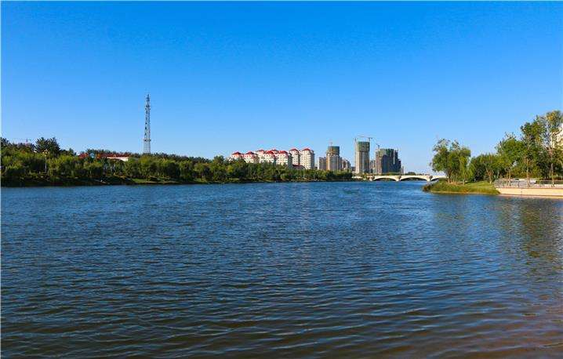

漳卫新河
漳卫新河自武城四女寺而下，入陵县，经德州市德城区入吴桥县，成为冀鲁分界，又顺次自西南向东北流经东光、宁津、南皮、乐陵、盐山、庆云、海兴、无棣，至大口河流入渤海，全长257公里。
沿河地区经济发展迅速，特别是滨海地区经济发展更为迅猛。北岸有国家重点工程沧州港（黄骅港），神黄铁路横贯该区，是我国晋煤外运的新通道；南岸有滨州港经济园区，有国家大型骨干化工企业鲁北化工厂。 东部有山东建设中的黄河三角洲高效生态经济区，经济发展日益崛起。
漳卫新河原名鬲津河，是大禹治水时开挖疏通的九河之一，1955年扩挖改造，与其上游的四女寺减河统一命名为四女寺减河。原四女寺减河是一条长度只有十多华里的行洪河道，上接卫运河，下连鬲津河。1968年研究治理漳卫河时，定名为漳卫新河。1971年再次扩大治理时，改分洪为承泄卫运河洪水入海的主要河道，正式更名为漳卫新河。
漳卫新河从山东省德州市四女寺村起，沿冀、鲁边界，途径山东省武城县、德州市、宁津县、乐陵市、庆云县、无棣县，河北省吴桥县、东光县、南皮县、盐山县、海兴县，在河北省海兴县与山东省无棣县交界处的大口河入海。
四女寺减河历史悠久，为黄河故道，历史称 津河。疏通于明永乐十年（公园1412年）。清初，减河“淤塞已平”、“闸座废坏不修”。
建国后，1955年春按55秒立米疏浚，1955年冬至1956年春按400秒立米治理，1957至1958年按850秒立米治理；1971～1972年再次扩大治理，形成现在态势，设计行洪量达3500秒立米。为利用河槽调蓄，服务于沿河农田灌溉，新建了辛集等六座拦河闸，可蓄水约1亿立米